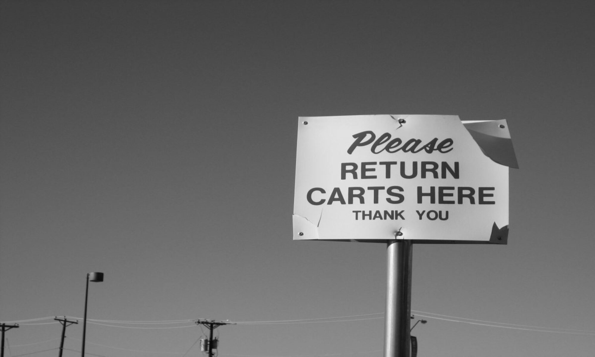

Time is never kind and rarely gentle. (Photo by author.)
Nobody imagined the palace would crumble someday. It had a shelf life, an expiration date.
Just like we do.
Lot C was once a dairy farm, surrounded by fields covered with goldenrod in the spring and unblemished snow in the winter, before the subdivisions sprang up. Nobody remembers that.
Green turned into grey. Asphalt. Curbs. Parking spaces. Guardrails. Overpasses. High tension lines. Tomorrow's community—today. Sprawl was visionary, space age.
One thing's for sure—time is never kind and rarely gentile. What isn't dead is dying. Some blame the new regional mall that opened near the Interstate, others the low income housing. A few mention toxic waste and shrug.
It's hard to believe now, but this place once beckoned, gleamed. We weren't zombies, just innocent. Shopping was about promises, possibilities. The cradle of modern identity. The altar of hopes and dreams. Everyone recalls the Christmas decorations and the crowds. The model train exhibit. Dad browsing the Craftsman tools. Mom in notions. A hand to hold until we were big enough to wander and then to roam. The Food Court. Aladdin's Castle. First dates. Prom dresses. Chess King. The first paycheck. The lure of something—everything—just around the corner.
The clearance sale went on for a month at Woolco before the shelves were empty and the lights went out for good. Ditto for a dozen other chains whose names are still visible as outlines in the stucco and cement even after the signs are gone.
Down a yellow corridor where nobody goes there's an office with a dusty frame hanging on the wall. An aerial photo. "Grand Opening, Labor Day, 1971." Faded clippings from a newspaper decades out of date.
"Air conditioned comfort."
A movie theater with three screens!
A Brunswick bowling alley that was planned but never built.
The Auto Center at Monkey Wards became a flea market with plastic statues of La Virgen and música ranchera. The vast expanse of pavement packed with station wagons and family sedans is now empty except for the weeds growing in the cracks. Grey turning green again. Lot C changed—things always do. We did too, except where it counts the most.
We couldn't see it then. It's too damn obvious now.
None of this was built to last.
None of us will leave a trace.
The cradle of modern identity. The altar of hopes and dreams. (Licensed image.)